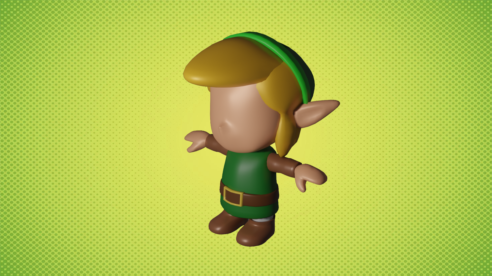
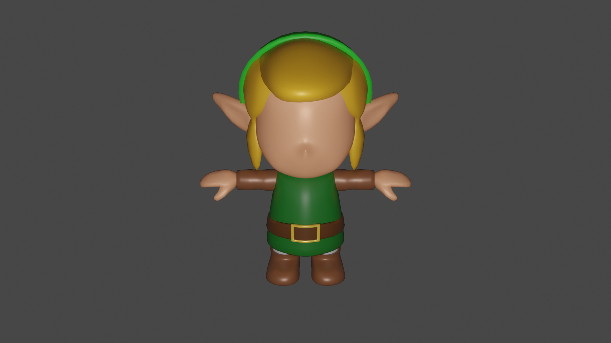

Nouveau projet 3D dans lequel j'expérimente de nouvelles choses avec de nouveaux outils comme les "modifier". L'aspect graphique du jeu "Link's awakening" m'a beaucoup plus et j'ai penser que c'était un bon exercice pour débuter avec l'outil "shaders smooth" de blender.
Deuxième vue :
